Analiza rješenja · JOI Spring Camp 2018 · Dan 4
Bomboni
O ovom članku
Tekst je prijevod službene japanske prezentacije rješenja, preoblikovan u članak. Slajdovi su ugrađeni kao slike; natpis pod svakim slajdom je prijevod teksta na njemu. Dijelovi označeni kao trenerska napomena nisu u izvornoj prezentaciji — dodani su da popune korake koje slajdovi preskaču ili samo skiciraju.
Slajdovi
Zadatak i primjer
izvorni slajdovi 1–5
-
1Naslov; Sakabe. -
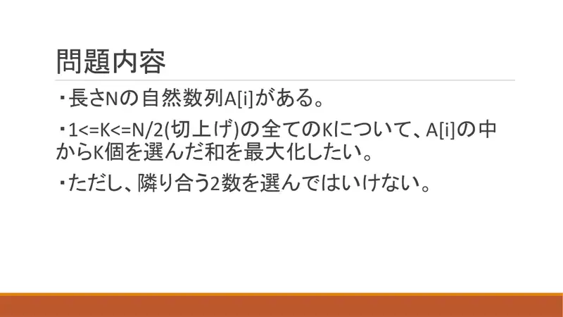
2Za svaki $K\le\lceil N/2\rceil$ maksimiziraj zbroj $K$ nesusjednih. -
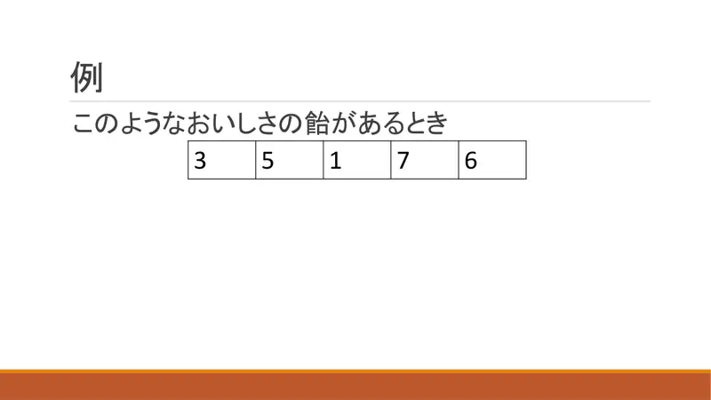
3Primjer 3 5 1 7 6. -
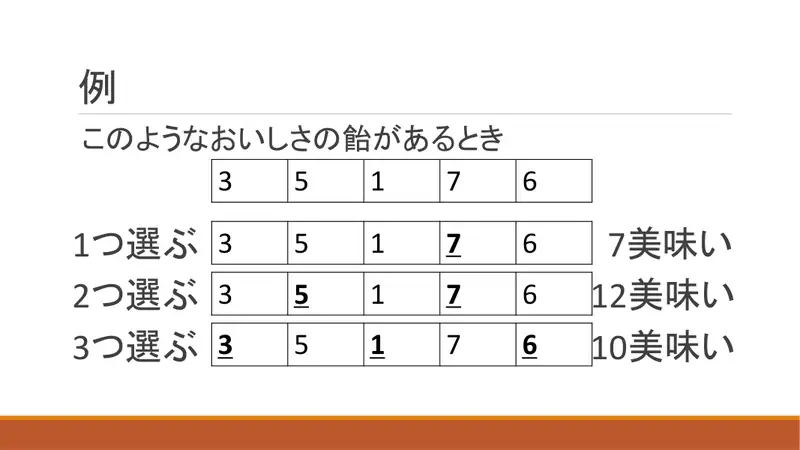
4$K=1$: 7; $K=2$: 12; $K=3$: 10. -
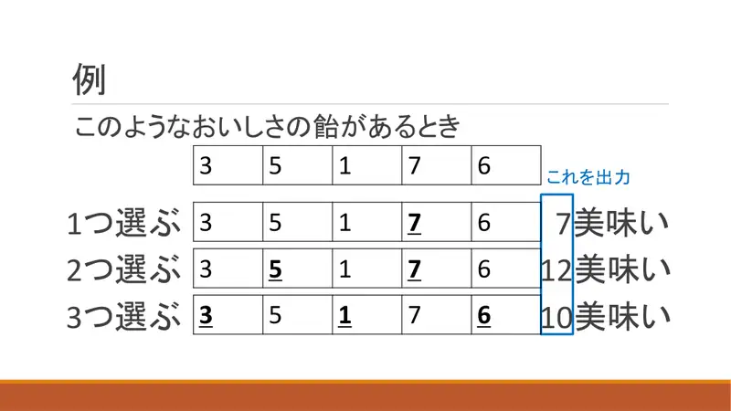
5Ispis.
← → tipke ili klik na sliku
Podzadatak 1 8 bodova
Koraci algoritma
DP $O(N^2)$
izvorni slajdovi 6–10
-
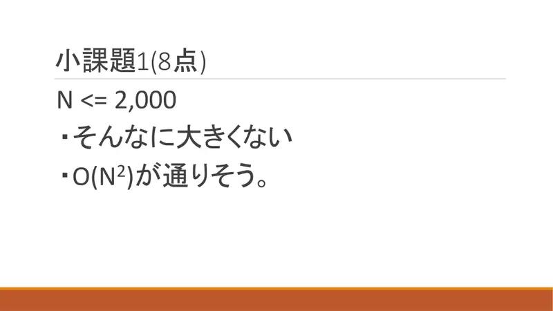
6$N\le2000$: $O(N^2)$. -
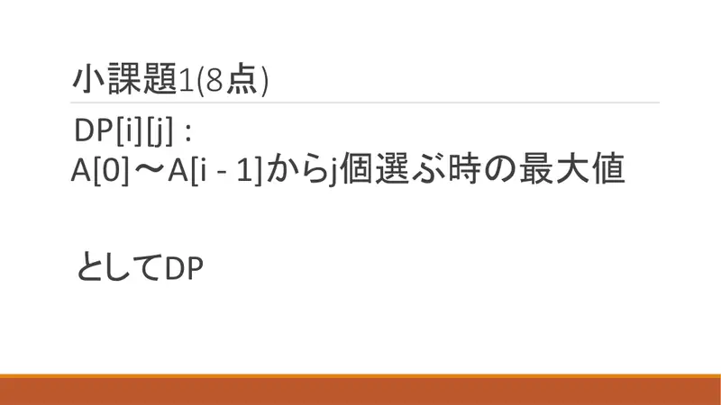
7$dp[i][j]$ = maksimum iz $A_0..A_{i-1}$ s $j$ odabranih. -
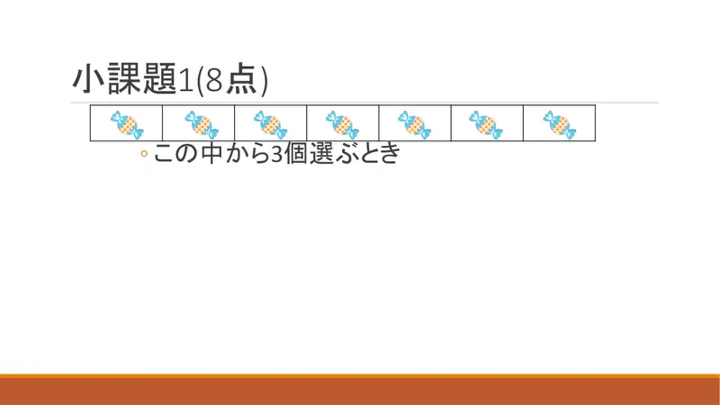
8Iz okvira odaberi 3. -
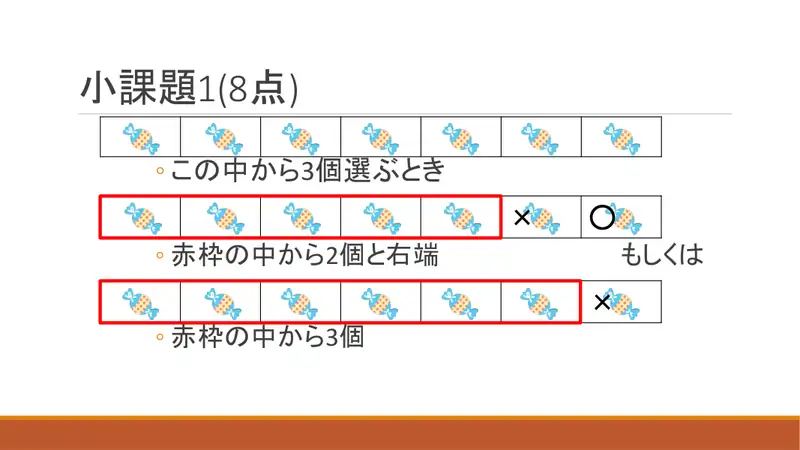
9Ili 2 iz užeg okvira + desni rub, ili 3 iz užeg okvira (desni rub neodabran). -
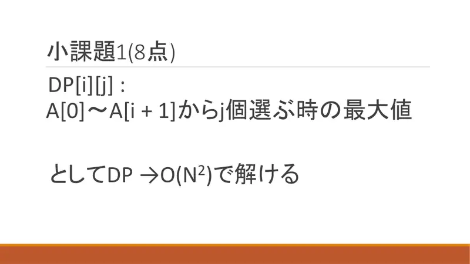
10$O(N^2)$.
← → tipke ili klik na sliku
Rješenje 2: greedy s požaljenjem
Koraci algoritma
Od $K$ do $K+1$
izvorni slajdovi 11–18
-
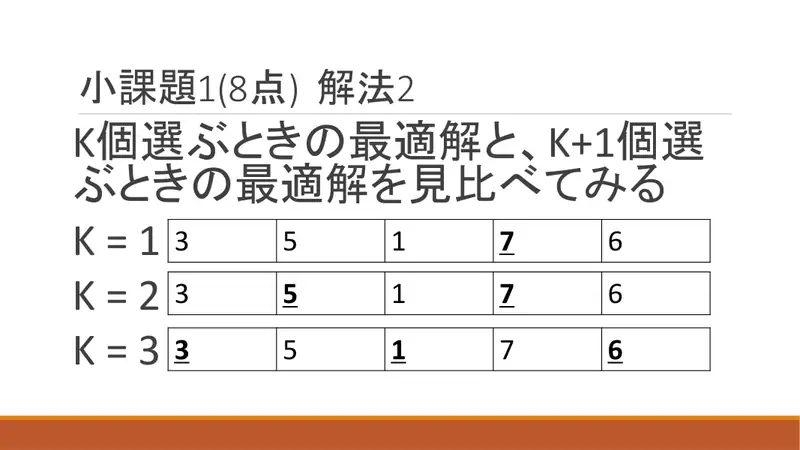
11Usporedi optimume za $K=1,2,3$. -
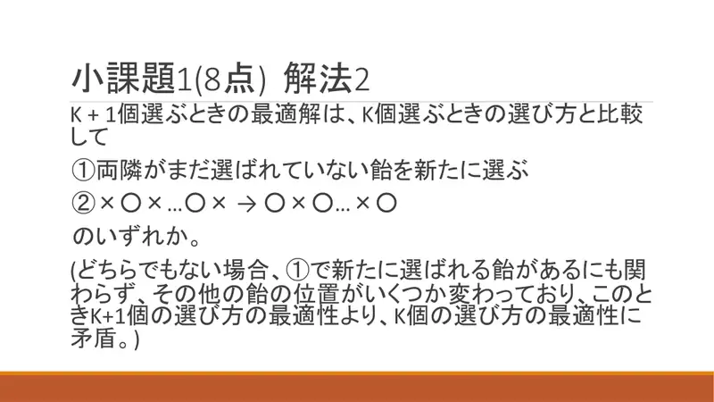
12Optimum za $K+1$ iz optimuma za $K$: ① dodaj bombon s neodabranim susjedima, ili ② pomak lanca $\times\circ\times\cdots\circ\times\to\circ\times\circ\cdots\times\circ$. (Inače kontradikcija s optimalnošću za $K$.) -
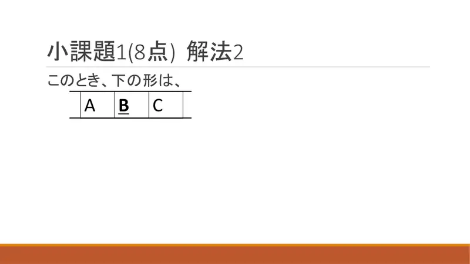
13Oblik $A\ B\ C$ s odabranim $B$. -
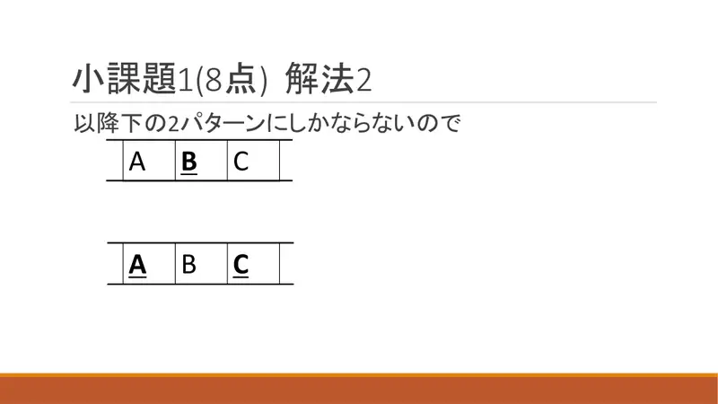
14Dalje su moguća samo dva uzorka. -
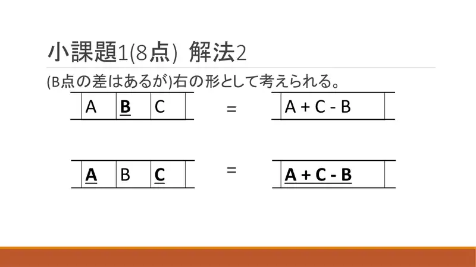
15Ekvivalentno jednom elementu $A+C-B$ (razlika je točno $B$ koji je već uračunat). -
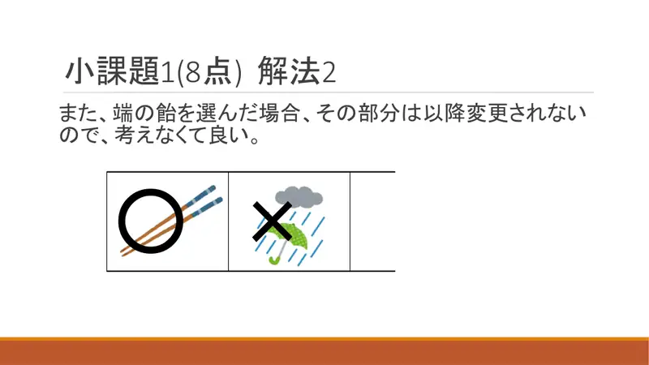
16Rubni odabrani bombon: taj dio se više ne mijenja — izbaci ga. -
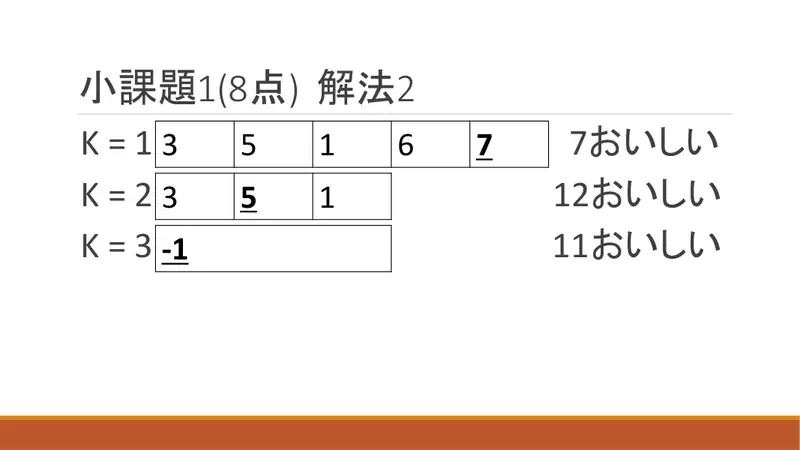
17Drugi primjer, niz 3 5 1 6 7: $K=1$ uzmi rubnih 7 → izbaci 7 i 6, ostaje 3 5 1 (odg. 7); $K=2$ uzmi 5 → $3+1-5=-1$ (odg. 12); $K=3$ uzmi $-1$ (odg. 11). -
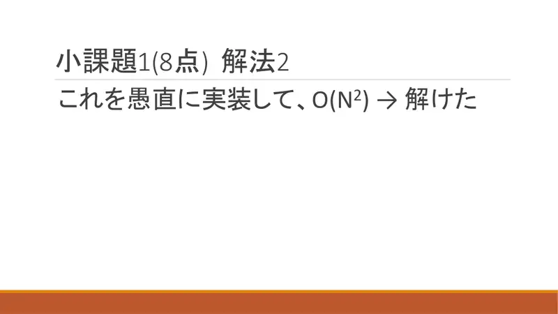
18Naivna implementacija $O(N^2)$.
← → tipke ili klik na sliku
Podzadatak 2 92 boda
Koraci algoritma
Prioritetni red i lista
izvorni slajdovi 19–24
-
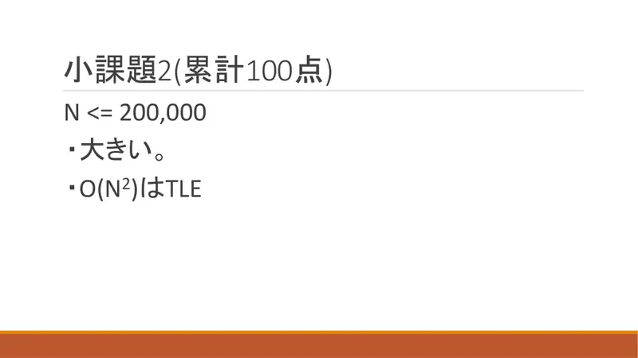
19$N\le2\cdot10^5$: $O(N^2)$ je TLE. -
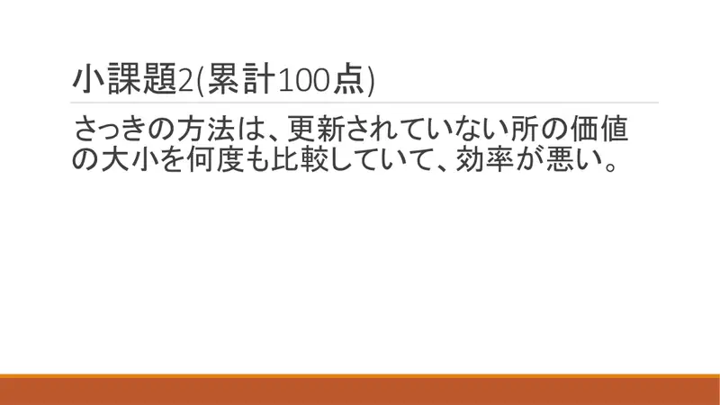
20Prethodna metoda uspoređuje nepromijenjene vrijednosti iznova — rasipno. -
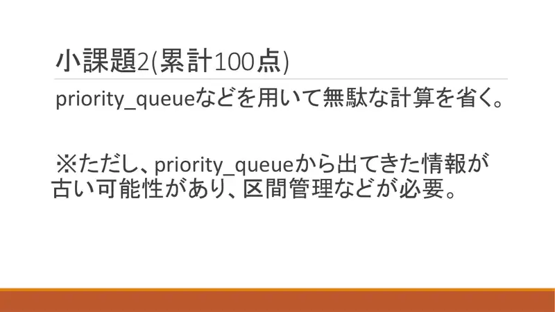
21Prioritetni red; podaci u redu mogu biti zastarjeli — treba upravljanje intervalima/listom. -
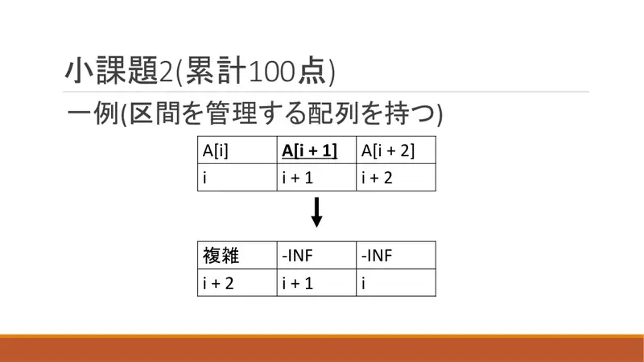
22Primjer strukture: polje s intervalima; nakon spajanja $i,i+1,i+2$ u jedan, susjedi postaju $-\infty$ ili se preskaču. -
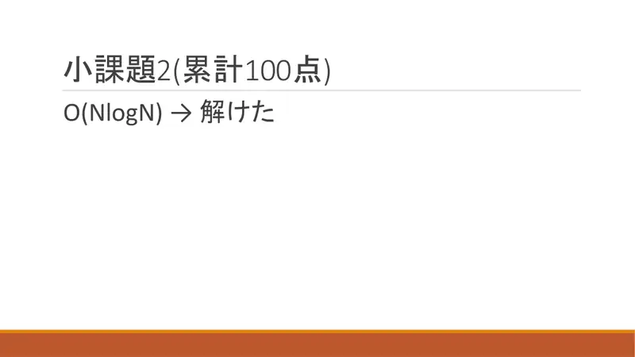
23$O(N\log N)$. -
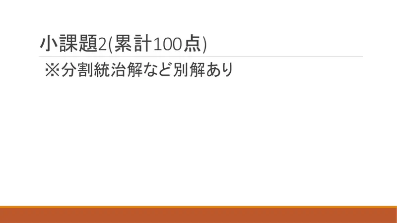
24Postoje i druga rješenja (podijeli pa vladaj).
← → tipke ili klik na sliku
Slajd
Statistika
izvorni slajd 25
-
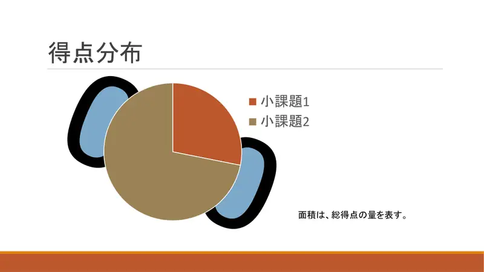
25Raspodjela.
Sažetak
- Odgovori su konkavni u $K$; prijelaz $K\to K+1$ je „dodaj” ili „pomakni lanac”.
- Greedy: najveći element $B$, spoji s susjedima u $A+C-B$; stražari $-\infty$; heap + povezana lista, $O(N\log N)$.